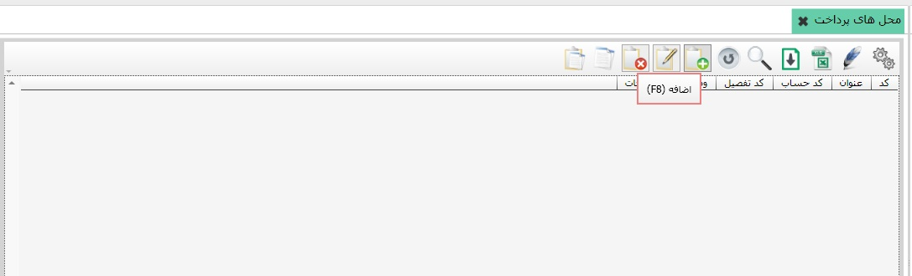

امکان تعریف «محل های پرداخت » از طریق این منو برای شما مهیا شده است. برای این منظور کافیست از منوی اصلی نرم افزار آن را اجرا نموده، و سپس صفحه ذیل را مشاهده می نمایید:
امکان ایجاد و ثبت «محل های پرداخت» از طریق دکمه «F8 اضافه» فراهم گردیده است. پس از کلیک آیکن اضافه شما صفحه زیر را مشاهده می نمایید.
 همانطور که در تصویر مشاهده می نمایید، امکان ثبت عنوان، کد حساب، کد تفصیل،
وضعیت، و توضیحات محل های پرداخت مهیا شده است.
لازم به توضیح است، علاوه بر آن امکان فعال یا غیرفعال نمودن محل های پرداخت نیز
پیاده سازی شده است.
همانطور که در تصویر مشاهده می نمایید، امکان ثبت عنوان، کد حساب، کد تفصیل،
وضعیت، و توضیحات محل های پرداخت مهیا شده است.
لازم به توضیح است، علاوه بر آن امکان فعال یا غیرفعال نمودن محل های پرداخت نیز
پیاده سازی شده است.